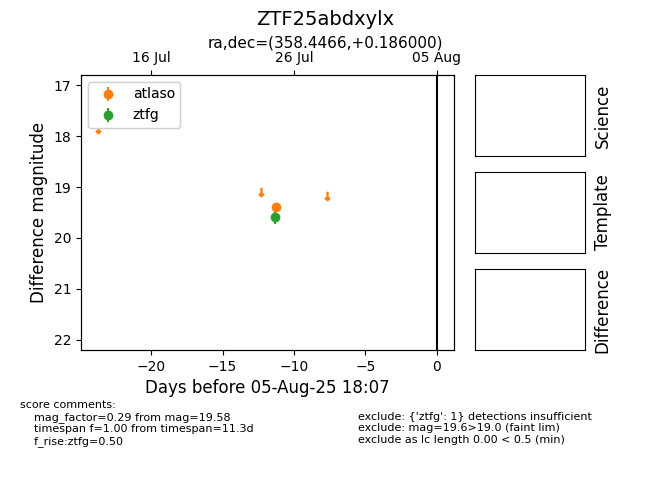

Target ZTF25abdxylx at 2025-08-05 18:07, see:
FINK: fink-portal.org/ZTF25abdxylx
Lasair: lasair-ztf.lsst.ac.uk/objects/ZTF25abdxylx
ALeRCE: alerce.online/object/ZTF25abdxylx
alt names
ZTF25abdxylx (ztf,fink)
coordinates:
equatorial (ra, dec) = (358.4466,+0.18600)
galactic (l, b) = (93.6854,-59.37195)
photometry
last atlaso=19.39, ztfg=19.58
1 atlaso, 1 ztfg detections
